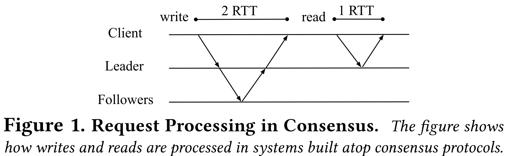
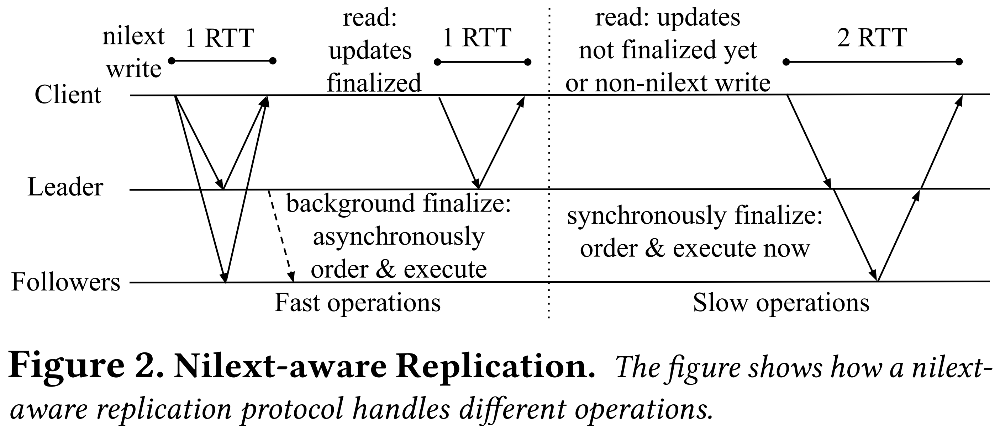
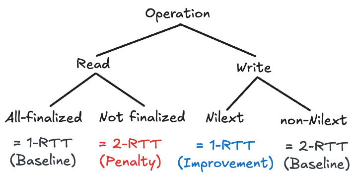
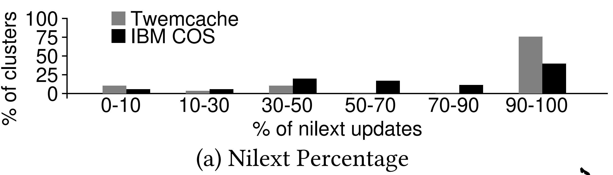
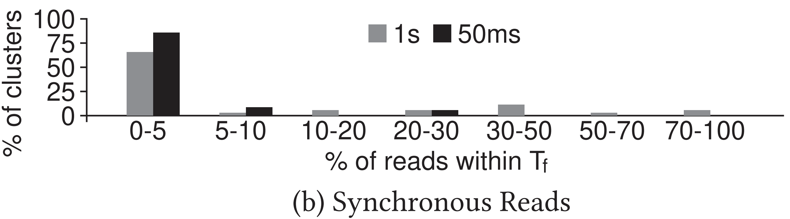

본 글은 논문 Exploiting Nil-Externality for Fast Replicated Storage (SOSP '21) 를 읽고 정리한 글입니다.
별도의 명시가 없는 한, 본 글의 모든 그림은 위 논문에서 가져왔습니다.
목차
3.1. Consensus-based Replication Background
- Paxos 나 VR 은 Consensus 를 통해 replica 들이 동일한 “순서” 로 작업을 처리할 수 있게 해준다.
- 즉, client 는 leader 에게 request 를 요청한 뒤, leader 와 replica 들은 서로 소통하며 이 “순서” 에 대해 합의를 하고, 각자 이 “순서” 대로 작업을 하는 식으로 동일한 “순서” 로 작업이 수행되게끔 한다.

- 위 그림은 failure 가 없다는 가정 하에 어떻게 write 와 read 가 수행되는지를 나타내는 그림이다.
- 일단 write 부터 보면
- Client -> leader: Leader 가 client 로부터 request 를 받는다.
- Leader 는 그 다음에 해당 request 에 log index 번호를 할당하고 (VR 에서는 이것을 Op number 라고 부른다), log 에 추가한다.
- Leader -> follower: Leader 는 follower 들에게
PREPARE메세지를 통해 request 내용 및 leader 가 정한 순서 (즉, log index 번호) 를 보낸다. - Follower -> leader: Follower 는 이 순서가 자신이 알고 있는 순서와 동일하다면, 즉 자신이 알고 있는 마지막 request 의 다음 request 라면,
PREPARE OK메세지를 보낸다. - Leader 는 충분한 (즉, quorum - leader 포함 )
PREPARE OK를 받으면 해당 request 를 상위 layer 인 server application (즉, storage process) 에게 보내 이것을 처리한다. - Leader -> client: Leader 는 처리 완료 후에 client 에게 그의 결과를 응답한다.
- 그리고 read 는 그냥 leader 혼자 처리한다.
- 즉, leader 는 완벽한 request 순서로 요청을 처리했음이 보장되기 때문에, 올바른 응답을 해줄 수 있다.
- 이런 replication protocol 에서 latency 는 Round Trip Time (RTT) 에 전적으로 의존한다.
- 또한, throughput 은 단위시간당 “Leader” 가 처리한 request 의 개수로 측정된다.
- 많은 replication protocol 에서는 request 를 Batch 로 처리하는 기능을 제공한다.
- 즉, 한번에 많은 request 를 받아 처리하는 것.
- 이렇게 하면 당연히 throughput 은 높아지지만, latency 가 증가하게 된다는 단점이 있다.
3.2. Exploiting Nil-externality for Fast Replication
- 이런 consensus protocol 을 naive 하게 적용하는 것은, storage interface 의 Nilext 특성을 제대로 살리지 못한다.
- 즉, 기존의 consensus protocol 에서는 Nilext operation 에 대해서는 이런 ordering 이랑 execution 을 defer 할 수 있는데도 불구하고 전부 synchronous 하게 처리한 후 응답하기 떄문.
- 따라서 본 논문에서의 가설은 Nilext operation 에 대해서는 ordering 과 execution 을 defer 해 성능을 더욱 높일 수 있을 것이라는 것이다.
- 이에 따라 이 가설을 검증할 수 있는 Nilext-aware replication protocol 을 설계했는데, 자세한 것은 Section 4. 에서 하도록 하고, 여기서는 간단한 overview 부터 살펴보자.

- 일단 위 그림이 Nilext-aware replication protocol 의 과정을 한눈에 보여주는 것이다.
- 우선 Nilext write 가 어떻게 완수되는지 알아보자.
- 전에 말한 대로, durability (logging) 은 defer 가 불가능하다.
- 따라서 client 는 모든 replica 에게 request 를 보내고, quorum 이상의 응답이 오면 durability 가 보장되었으므로 (즉, quorum 이상의 replica 에서 request 가 log 에 추가되었으므로) 해당 request 가 완료되었다고 취급한다.
- 따라서 이것은 1-RTT 에 수행될 수 있고, client 는 이 request 가 ordering 및 execution 되기를 기다릴 필요가 없다.
- 여기까지의 상태를 Completed 라고 앞으로 부르도록 하자.
- 그리고 이것은 VR 과 마찬가지의 방법으로 ordering 되고 execution 되는데, 대신 이것이 background 로 처리된다.
- 이렇게 ordering, execution 까지 완료된 상태를 Finalized 라고 부르기로 하자.
- 이렇게 바뀐 storage 의 상태는 나중에 non-Nilext operation 이 요청되면 그때 externalize 된다.
- 따라서 이 시점 전까지는 관련 data 들이 Finalize 되어야 한다.
- 이에 따라 만약 read operation 이 leader 에게 요청되면, leader 는 이 요청이 필요로 하는 data 들이 Finalize 되었는지를 체크할 것이다.
- 만약에 다 Finalize 되었다면, 그냥 operation 을 처리한 뒤에 응답한다 (1-RTT).
- 하지만 만약에 그렇지 않다면, 이번에는 background 가 아닌 foreground (synchronously) 로 VR 과 동일한 과정을 통해 ordering 을 하고 execution 하여 전부 Finalize 한 뒤에서야 operation 을 처리하고 응답한다 (2-RTT).
- 근데 이런 2-RTT read operation 은 자주 일어나지 않는다; 앞으로도 계속 강조할 것이지만, Finalize 작업이 background 로 계속 돌고 있기 때문에 대부분은 Finalize 된 상태일 것이고, 그렇지 않는다 할 지라도 한번 2-RTT read 가 발생하면 뒤이은 read 에 대해서는 (만약 동일한 데이터를 read 할 때는) 1-RTT 에 처리되기 때문이다.
- 만약 non-Nilext write operation 가 오면, 이때는 어쩔 수 없다. 그냥 VR 와 동일하게 2-RTT 로 처리된다.

- 따라서 위처럼 정리할 수 있다.
- 결과적으로 Nilext 의 효과를 보기 위해서는 대부분의 write 가 Nilext 하고, read 는 최근에 write 하지 않은 데이터를 참조하면 더욱 좋을 것이다.
3.3. Fast Case is the Common Case
- 여기서는 실제 production trace 를 보면서 application-level tendency 를 확인해 보자.
NXSECTION
- 여기
3.3.x.section 은 논문에는 없는 section 임다.
3.3.1. Nilext write portion
- Section 2.2.1. 에서 말한 것처럼, LSM tree 에 기반한 애들은 모든 write 가 Nilext 했었고, Memcached 는 그렇지 않았다.
- 근데 이때 write 에서 Nilext 가 차지하는 비중은 얼마일까?
- 다시 말해, 만약 요청되는 write operation 중 대부분이 non-Nilext 하다면, Nilext write 가 1-RTT 인들 별 소용이 없는게 아닌가?
- 이를 확인하기 위해 Memcached 의 Twitter 의 fork 버전인 Twemcached 에 대한 production trace 를 분석해 29 개의 cluster 에 대한 통계를 냈다.
- 또한 IBM COS (Cloud Object Storage) 에 대해서도, 35 개의 cluster 를 분석해 통계를 냈다.
- 참고로 이때는 사용한 데이터셋에서 10% 이상의 operation 이 write 인 cluster 만을 고려했다고 한다.

- 먼저 Twemcached 를 보면:
- 이 그래프는 이렇게 해석하면 된다:
- 가장 오른쪽에 집중하면, 거의 80% 에 달하는 cluster 들 (세로축) 에서 발생하는 write operation 중, 90-100% (가로축) 가 Nilext operation 인
SET이었다는 소리이다.
- 가장 오른쪽에 집중하면, 거의 80% 에 달하는 cluster 들 (세로축) 에서 발생하는 write operation 중, 90-100% (가로축) 가 Nilext operation 인
- 또한 위 그래프에서 보이지는 않지만, non-Nilext write 중
ADD,CAS,DELETE,INCR,PREPEND만이 사용되었고, INCR를 제외하면 나머지는 전부 “error” 의 형태로 storage 의 상태를 노출시키는 중이었다.- 따라서 이 말은 만약에 interface 를 변형해 “error” 도 출력되지 않게 한다면, 더욱 더 많은 write operation 을 Nilext 로 간주할 수 있다는 소리가 된다.
- 이 그래프는 이렇게 해석하면 된다:
- 또한 IBM COS 를 보면
- 65% 에 달하는 cluster 들 (세로축) 에서 발생하는 write operation 중 90-100% (가로축) 가 Nilext operation 이었다는 것이었다.
- 마찬가지로 IBM COS 의 non-Nilext operation 인
DELETE도 “error” 만을 노출하고 있고, 이놈을 변형해서 더욱 높은 수치를 얻어낼 수도 있다.
3.3.2. Read latest portion
- 다음으로는 2-RTT read 를 유발하는 상황인 un-Finalized read 가 production trace 에서는 얼마나 발생하는지 보자.
- 일단 를 Finalize 에 걸리는 시간이라고 하자.
- 그럼 같은 데이터에 대해 인 상황의 비중을 보면 이를 알 수 있을 것이다.
- 이에 따라 일 때와 일 때에 대해 IBM COS 데이터셋으로 분석해본 결과, 다음과 같은 결과가 나왔다:
- 참고로 Twemcached 데이터셋은 밀리초 단위의 trace 가 없어서 분석하지 못했다고 한다.

- 이놈은 이렇게 해석하면 된다:
- 66% 의 cluster 들에 대해 이내에 read-after-write 한 경우는 0-5% 밖에 안됐고,
- 85% 의 cluster 들에 대해 이내에 read-after-write 한 경우도 0-5% 밖에 안됐다.
- 심지어 이 수치는 1-RTT 가 2ms 밖에 안되는 환경에서 측정한 것이기에, 이 라는 수치도 경장히 보수적으로 잡은거라고 할 수 있다.
- 또한 위에서도 말했다 시피 한번 read-after-write 가 일어나 synchronous 가 발생한 뒤에는, 앞으로는 그러지 않을 것이기에 실제 2-RTT read 가 발생하는 비중은 위 분석에서보다 훨씬 적을 것이다.
3.4. Comparison to Other Approaches
- 물론 Section 7. 에서 related work 에 대한 설명이 있지만, 여기서도 간단하게 기존에는 어떤 시도들이 있었고 Nilext-aware replication protocol 이 이것들에 비해 가지는 강점들에 대해서 알아보자.
3.4.1 Efficient Ordering in Consensus.
NXSECTION
- 여기
3.4.1.x.section 은 논문에는 없는 section 임다.
3.4.1.1. Network Ordering.
- 어떤 network 는 이런 ordering 을 수행해주는 기능을 갖고 있기도 하고, 따라서 1-RTT 에 ordering 까지 할 수 있다.
- 그런데 당연히 이런 network 는 비싸다. 이에 반해 Nilext-aware protocol 은 이런 장비 없이도 가능하고, geo-replication (multi-region replication) 환경에서도 가능하다.
3.4.1.2. Speculative Execution.
- 이건 order 가 다 맞을것이라는 optimistic approach 이다.
- 즉, client 는 모든 replica 에게 request 를 뿌리고, 각 replica 는 즉시 execution 을 한다.
- 그리고 client 는 이 replica 들 에게서 받은 result 를 가지고 inconsistency 가 있는지 확인한 후에
- 만약 그렇다면, rollback 을 한다.
- 근데 이 방식에서는
- Client 가 rollback 해주기 전까진 storage 가 inconsistent 상태에 놓인다는 점과
- Rollback 이 필요하다는 단점이 있다.
- 하지만 Nilext-aware replication 에서는 위와 같은 문제가 없다.
- 참고로 얼핏 생각하면 Nilext-aware replication 과 speculative replication 이 비슷해 보일 수 있는데,
- Speculative replication 은 바로 execute 를 하고 ACK 를 날리지만
- Nilext-aware replication 은 ACK 를 하고 execute 를 한다는 차이점이 있다.
3.4.1.3. Exploiting Commutativity.
- CURP 와 같은 protocol 에서는 다른 데이터를 참조하는 operation 들에 대해서는 ordering 이 애초에 필요가 없다 (교환법칙 - Commutativity) 는 점을 이용한다.
- 하지만 Section 5.7. 에서 말하겠지만, 이 protocol 의 문제점은 같은 데이터를 참조하는 경우 (즉, Conflict 상황) 에서는 최대 3-RTT 까지 overhead 가 커질 수 있다는 점이다.
- 만약 이 operation 이 Nilext 라면, conflict 상황에서도 1-RTT 로 write 를 끝낼 수 있기 때문에 Nilext-aware replication 이 우위를 가진다고 할 수 있다.
- 심지어, 이 Nilext-aware replication 과 Commutative replication 은 둘 모두를 hybrid 로 사용할 수 있다.
- 이것에 관해서는 Section 5.7. 에서 더 알아보자.
3.4.2 Other Approaches to Replicated Storage.
이해 부족
- 여기에서는 related work 에 대한 이해가 부족해 간단하게만 정리하겠슴다.
- 다른 replication 들에 대해 살펴보고 가자면,
- Shared register: API 를 read 와 write 두개만 지원하면 Register 라는 것을 이용해 해결할 수 있다고 한다.
- 하지만 RMW 를 지원하지 않기 때문에 기각.
- Gryff (NSDI’20) 논문 에서는 consensus 를 결합해 RMW 도 가능하게 했지만,
UPDATE가 2-RTT 라는 문제가 있다.
- Gryff (NSDI’20) 논문 에서는 consensus 를 결합해 RMW 도 가능하게 했지만,
- 하지만 RMW 를 지원하지 않기 때문에 기각.
- Primary-backup 여기서도 write operation 은 2-RTT 이라고 한다.
- Chain replication 이놈은 message delay 가 너무 길다고 한다.
- Shared register: API 를 read 와 write 두개만 지원하면 Register 라는 것을 이용해 해결할 수 있다고 한다.
- 물론 이들과 Nilext-aware replication 을 섞을 수 있지만, 그건 future work 로 남긴다고 한다.
3.4.2.1. Summary
- 정리하자면, Nilext-aware replication 은 다른 protocol 들과 다르게 interface 의 특성인 Nilext 를 최대한 살리는 강점이 있다.
- 또한, Nilext-aware replication 에서 문제가 되는 non-Nilext write 와 read un-Finalized 는 발생빈도가 아주 적기에 문제가 되지 않는다.
- Nilext-aware replication 은 특정한 network 기능에 의존하지도, rollback 도 하지 않는다는 장점이 있다.
- 또한 Commutativity 와 결합하여 더 좋은 성능을 낼 수도 있다.